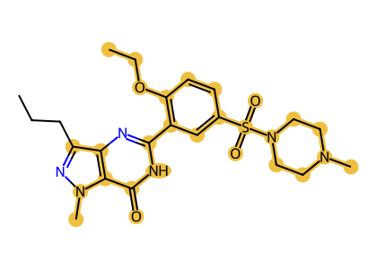
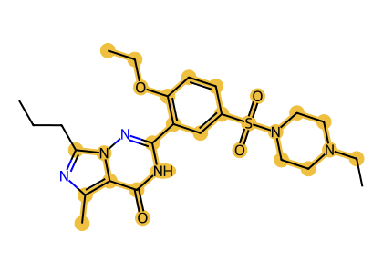
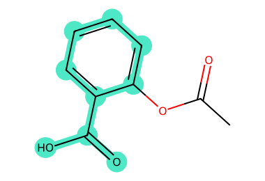

Molecular graph matching
Exact chemistry search, proved¶
SMSD Pro finds substructures, maximum common substructures and similar molecules in C++, Java and Python. Every result states whether the search completed and whether its answer is proved optimal, so you always know what you can rely on.

Start in a minute¶
import smsd
# Is benzoic acid inside aspirin?
hit = smsd.Substructure.find("c1ccccc1C(=O)O").match("CC(=O)Oc1ccccc1C(=O)O")
print(hit.found) # True
# What do two molecules share, and is that proved maximal?
mcs = smsd.MCS.find("CC(=O)Oc1ccccc1C(=O)O").match("OC(=O)c1ccccc1O")
print(mcs.matches[0].atom_count, mcs.optimal) # 10 True
# How similar are they?
a = smsd.fingerprint_from_smiles("CC(=O)Oc1ccccc1C(=O)O", radius=2, fp_size=2048)
b = smsd.fingerprint_from_smiles("OC(=O)c1ccccc1O", radius=2, fp_size=2048)
print(round(smsd.tanimoto_coefficient(a, b), 3)) # 0.185
See it on real molecules¶



Choose the right tool¶
| You want to | Use | Read |
|---|---|---|
| Check whether a fragment occurs in a molecule | Substructure.find(query).match(target) |
Substructure search |
| Express a pattern with atom and bond rules | SMARTS queries | SMARTS queries |
| Find the largest shared part of two molecules | MCS.find(a).match(b) |
Maximum common substructure |
| Compare or rank molecules by similarity | Fingerprints and Tanimoto | Fingerprints and similarity |
| Search thousands to millions of molecules | TargetCorpus screening |
Screening a library |
| Hold a large library compactly for repeated searches | Packed fingerprint corpora | Packed fingerprint index |
| Find the k most similar molecules fast | Packed top-k screening | Packed fingerprint index |
| Cluster a library or pick a diverse subset, on CPU or GPU | Butina, MaxMin, top-k pairs | Clustering and diversity |
| Use an NVIDIA GPU | smsd-cuda |
CPU and GPU screening |
| Work from a shell or a container | smsd command line, Docker |
Command line and containers |
| Build in C++ or Java | Header-only C++, CDK-based Java | C++ and Java |
| Feed results to pandas, PyTorch or scikit-learn | Data adapters | Machine learning and data frames |
| Give an AI assistant chemistry tools | Local MCP server | Chemistry tools for AI assistants |
Guides¶
-
Getting started
Install, parse molecules and run your first three searches.
-
Maximum common substructure
Objectives, chemistry rules, time limits and how to read a proved result.
-
Substructure and SMARTS
Exact matching, every embedding, and patterns with atom and bond rules.
-
Fingerprints
Circular, path, torsion and MACCS keys with one set of options.
-
Screening a library
Prepare a corpus once, then search it by threshold, top-k or structure.
-
CPU and GPU
When the GPU helps, how to request it, and how results stay identical.
-
Clustering and diversity
Butina clusters, MaxMin picks and nearest pairs, on the CPU or an NVIDIA GPU.
-
Machine learning and data
Fingerprints into NumPy, pandas, Arrow, Polars, scikit-learn and PyTorch.
-
Tools for AI assistants
A local MCP server and tool definitions that give assistants exact chemistry.
Notebooks¶
Each notebook runs as written and opens in Google Colab with one click.
Cite SMSD Pro¶
Rahman, S. A. SMSD Pro: Coverage-Driven, Tautomer-Aware Maximum Common Substructure Search. ChemRxiv (2026). doi:10.26434/chemrxiv.15001534/v1. The software DOI and further references are in CITATION.cff.